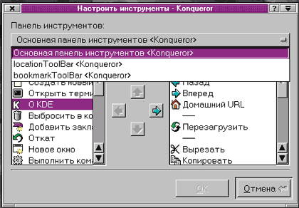

fedorchuk@geo.tv-sign.ru
http://linuxsaga.newmail.ru, http://onix.nm.ru
Нужен ли вам файловый менеджер? Безусловно. Какой выбрать? Ответить нетрудно, это зависит от вкусов и привычек. Вам со времен DOS нравятся две панели, где файл можно взять слева и положить направо? Тогда Konqueror - для вас. Или с тех же времен осталась ностальгическая любовь к древовидным структурам XTree? И тогда Konqueror - для вас. Но если вам подходит стиль Windows Explorer - то и тогда Konqueror для вас.
Однако нет, вы презираете файловые менеджеры, полагая, что единственно достойный способ управляться с данными - командная строка. А тогда Konqueror - безусловно для вас.
Почему? Да потому, что Konqueror многолик и способен по вашему желанию принять любое обличье. Однако и это еще не все. Konqueror может выступить в ипостаси не только файлового менеджера, но и браузера. Причем браузера полноценного, поддерживающего практически все современные Web-технологии. Эти его особенности и будут темой настоящей статьи.
Необходимо добавить, что статья написана на основании впечатлений от той реализации Konqueror, которая (в составе KDE2) входит в комплект Linux Mandrake 7.2, причем в качестве языка установки выбран русский. Поскольку Konqueror, как, впрочем, и KDE2, - это "правильное" приложение, черпающее сведения о языковом окружении из локальных установок, практически все последующие сообщения программы будут на русском языке (вполне удобопонятном и, за редким исключением, правильном).
Программа Konqueror входит в комплект интегрированной графической среды KDE2 и составляет неотъемлемую ее часть. Konqueror - прямой потомок kfm из KDE1 и, подобно последнему, представляет собой файловый менеджер, совмещенный с браузером. Однако потомок, унаследовав все положительные черты предка, далеко превзошел его в отношении функциональности и настраиваемости.
Достоинства и недостатки kfm, можно считать, всем известны. К первым можно отнести интегрированность с KDE и его приложениями и собственно совмещенность с браузером - это и была революционная идея разработчиков. Из недостатков отмечу только чрезвычайную медлительность - любая файловая операция в kfm сопровождалась надписью "Работаю", на мой взгляд, излишне оптимистичной - действия kfm скорее можно было определить как "Дремлю". Еще одна принципиальная особенность kfm как файлового менеджера - внешнее сходство с Проводником (Explorer) в Windows, что, кстати, далеко не всем нравилось, но так или иначе, было стандартом при создании любого рода файловых менеджеров.
В Konqueror разработчикам удалось многократно усовершенствовать предшественника, в том числе развить и главное его достоинство - степень интеграции со средой, изжив при этом практически все недостатки. Итогом стало появление замечательного программного продукта, на мой взгляд, не имеющего аналогов в мировой практике. И своеобразие его начинается с внешнего вида.
Внешний вид
При первом знакомстве с Konqueror в нем не обнаруживается ничего выдающегося. Перед глазами стандартное окно KDE со всеми его управляющими элементами (рис. 1). Разумеется, если Konqueror запущен из своей родной среды - при установленном KDE и всех нужных библиотеках, - он способен работать под любым другим файловым менеджером (по крайней мере, под теми, что я пробовал).
| Рис. 1. Файловый менеджер Konqueror - вид по умолчанию.
|
Внутри окна - строка главного меню (весьма, надо сказать, обширного по сравнению с kfm); инструментальная панель с кнопками-пиктограммами; адресная строка, отражающая путь до локального файла или URL удаленного. Ниже - две вертикально расположенные панели. В левой - дерево каталогов, в правой - содержание текущего каталога в виде пиктограмм, сопровождаемое статусной строкой. Панели по умолчанию синхронизированы - переход по дереву каталогов вызывает автоматическое изменение содержания правой панели.
В правом нижнем углу каждой панели - по маленькому флажку, по умолчанию включенному. Отключение одного вызывает аналогичную реакцию второго. После чего начинаешь понимать, что именно они и отвечают за синхронизацию панелей (это, впрочем, можно сделать и через меню, о чем еще скажем ниже).
В общем, казалось бы, вариации на тему Windows Explorer, и ничего более. Однако не будем спешить: постигнуть всю мощь Konqueror можно только как следует изучив его возможности и, в первую очередь, главное меню (заметим, весьма многоуровневое).
Так вот, Konqueror может (по вашему желанию) принять любой внешний вид. Дерево каталогов можно искоренить как класс. А освободившееся пространство разбить на любое количество панелей, расположенных произвольным образом (например, на две вертикально расположенные панели, как это принято для клонов Norton Commander).
Пиктограммы на панелях можно заменить на надписи, причем белыми буквами на синем фоне. И получить тем самым почти полную зрительную иллюзию работы в Norton Commander (или Midnight Commander, более близком пользователю Linux).
А где же командная строка в нижней части экрана? Ведь без нее не обходится ни один клон Norton Commander. Так вот: мало того, что из Konqueror можно через меню вызвать строку мини-терминала (стандартная опция KDE) или открыть через то же меню обычное терминальное окно. В Konqueror можно еще и включить не просто командную строку, но полноценное окно эмуляции терминала - с историей команд, их дополнением посредством клавиши Tab, вставкой команд средней клавишей мыши, возможностью просмотра в любом направлении (как через полосу скроллинга, так и комбинацией клавиш Shift+PageUp/PageDown), выдачей сообщений об ошибках. Короче, со всеми возможностями традиционной текстовой Unux-консоли.
В итоге Konqueror приобретет вид, подобный тому, что показан на рис. 2. Согласитесь, с исходным он имеет мало общего.
| Рис. 2. Двухпанельное представление Konqueror со включенным эмулятором терминала.
|
На рис.2 следует обратить внимание на флажки внутри каждой панели (круглый слева и квадратный справа). Первый предназначен для перехода на соответствующую панель, второй - для ее синхронизации. Так, эмуляция терминала в любой из панелей или в дереве каталогов приводит к тому, что все перемещения по файловой системе с помощью мыши вызывают смену текущего каталога в консоли.
И это еще далеко не все возможности модификации внешнего вида Konqueror, который удается настроить в соответствии с любыми специфическими потребностями. Как - об этом речь пойдет ниже. А пока предлагаю решить, стоит ли тратить время на настройки вообще, для чего следует рассмотреть функциональность файлового менеджера.
Функциональность
Управлять файлами в Konqueror можно несколькими способами: через пункты главного меню; через контекстное меню, вызываемое, как и положено, щелчком правой клавиши мыши на объекте; путем простого манипулирования мышью. Ряд опций доступен через инструментальную панель (тоже неограниченно настраиваемую). Многие команды меню дублируются комбинациями горячих клавиш. Но в целом развитой системы клавишного управления, позволяющей обходиться без мыши (как это возможно в Norton Commander и Midnight Commander), в Konqueror нет.
Следует сразу заметить, что главное меню также в какой-то мере контекстно чувствительно, и содержание его пунктов зависит от того, находимся ли мы в файловых панелях, в дереве каталогов или в эмуляторе терминала.
Главное меню включает следующие пункты:
- Страница;
- Редактирование;
- Вид;
- Перейти;
- Закладки;
- Инструменты;
- Настройки;
- Окно;
- Помощь.
Они активизируются наведением курсора мыши (без щелчка) или нажатием клавиши Alt. После чего щелчком левой клавиши или нажатием клавиши Enter открывается выпадающее меню. Рассмотрим пункты меню последовательно.
В меню Страница входят пункты Новое окно и Создать копию окна (различие между ними в том, что в первом случае открывается окно с параметрами по умолчанию, а во втором окно наследует параметры текущего окна), а также Открыть страницу и Выход, смысл которых очевиден.
Меню Редактирование не содержит ничего неожиданного. Здесь сгруппированы операции отмены, копирования, вырезания, вставки и тому подобные. Стоит только обратить внимание на отсутствие возможности возврата отмененной операции (Redo) и на различные режимы удаления файлов: помещение в корзину (аналогично Windows), удаление средствами операционной системы, уничтожение (насколько я понял, истребление файла со всеми его ссылками). Здесь же есть доступ к свойствам файла или каталога, включающим права доступа с возможностью их изменения в рамках текущей компетенции пользователя (или, соответственно, суперпользователя).
В этом же меню есть чрезвычайно полезный пункт - Создать новый (т. е. новый каталог, файл, устройство или URL). С каталогом все ясно, а вот из файлов можно создать пустой файл HTML (с минимально необходимыми тегами title, html, body) или plain text, что полезно, например, при работе над сайтом или книгой. Что касается устройств, то можно "создать" CD-ROM или флоппи-дисковод - в текущий каталог помещаются ссылки на соответствующие физические устройства для быстрого к ним обращения.
В меню Вид для начала можно определиться с режимом просмотра файлов и каталогов (вид с пиктограммами, текстовый, многоколоночный и т.д.). Включение пункта Использовать index.html переводит менеджер в режим браузера при попадании в каталог с индексным файлом web-сайта. Далее, здесь же включается синхронизация панелей и показ скрытых файлов, определяются вид пиктограмм, формат списка файлов, цвет и узор фона, о чем подробнее пойдет речь в разделе о настройках. Пока скажу только, что все изменения, сделанные через меню Вид, сохраняют силу лишь в текущем сеансе. Наконец, через это же меню осуществляется печать.
Название меню Перейти отражает содержание: это переход на один уровень вверх или в домашний каталог, быстрое перемещение к нескольким фиксированным папкам или закладкам, возврат к предыдущему состоянию.
С пунктом Закладки также все ясно: здесь создаются новые закладки (Bookmark в понимании Netscape Navigator) и редактируются существующие. Отсюда же осуществляется переход по созданным закладкам Konqueror; для этого, впрочем, можно воспользоваться и закладками, созданными ранее в Netscape Communicator.
Меню Инструменты содержит три пункта: Выполнить команду, при выборе которого вызывается стандартный мини-терминал KDE, Открыть терминал (по умолчанию открывается konsole) и Найти файл. С помощью последнего вызывается панель поиска, позволяющая осуществлять поиск файла по имени или маске в неком каталоге (в том числе рекурсивно), а также по времени создания, типу (файл, каталог, символическая ссылка и т. д.), фрагменту текста.
Меню Настройки, во-первых, управляет отображением интерфейсных элементов (строки меню, инструментальной панели и т. д.). Во-вторых, оно позволяет выполнить индивидуальное конфигурирование Konqueror и сохранить внесенные изменения (о чем логично поговорить в соответствующем разделе).
Меню Окно ответственно за внешний вид Konqueror. Именно здесь можно разделить текущую панель по вертикали и горизонтали (впрочем, вертикаль и горизонталь перепутаны по сравнению с общепринятым пониманием), включить или выключить дополнительные панели и определить их положение относительно текущей панели (справа или внизу от нее), показать или скрыть дерево каталогов и эмулятор терминала. Впрочем, и это предмет следующего раздела.
Наконец, меню Помощь вряд ли нуждается в пояснениях. Скажу только, что оно включает, с одной стороны, полное руководство по Konqueror (к сожалению, это один из немногих элементов, не переведенных на русский язык), с другой - контекстную помощь под именем Что это. Выбрав этот пункт, а затем ткнув образовавшимся знаком вопроса в какую-либо из кнопок инструментальной панели, можно не только получить внятное (и русскоязычное) описание ее назначения, но и узнать об альтернативном способе достижения того же результата, например, через главное меню.
Таковы возможности, доступные через главное меню. Возможности меню контекстного более ограничены. Здесь можно выполнить стандартные операции вырезания, копирования и вставки, удаления и помещения в корзину. В зависимости от типа выбранного файла, его можно просмотреть через встроенную (в окне Konqueror) или подключаемую (в самостоятельном окне) программу просмотра, либо открыть с помощью предписанного заранее или произвольного приложения. Кроме того, можно изменить свойства файла или каталога (в том числе и права доступа; к сожалению, рекурсивное их изменение во вложенных каталогах не предусмотрено). Переименовать файл можно тоже только через панель свойств.
Список доступных для просмотра форматов заслуживает отдельного рассмотрения. Разумеется, распознается текстовый формат, файлы текстового процессора Lyx раскрываются в виде исходного текста для TeX. Из растровых графических форматов доступны для просмотра практически все распространенные - TIF, GIF, JPEG, PNG. Щелчок на HTML-файле автоматически вызывает встроенный браузер.
Привлекает внимание возможность работы с архивами и пакетами. Встроенными средствами Konqueror распознает архивы tar.gz и tgz, позволяя обращаться с ними как с каталогами - копировать, перемещать, удалять их содержимое целиком или частично, отдельными файлами или вложенными подкаталогами, просматривать содержимое текстовых файлов и изображений с помощью программы просмотра.
Прочие архивные форматы (tar.bz2, zip и т.д.) не распознаются внутренними средствами, однако щелчок мышью на имени такого файла вызывает программу arc - штатный архиватор KDE, с помощью которого их можно распаковать, дополнить, обновить и т. д.
Аналогично и обращение с пакетами rpm: щелчок на имени пакета приводит к запуску kpackage - самого, на мой взгляд, удобного средства для работы с rpm-пакетами, входящего в стандартный комплект KDE. Правда, способа простого открытия пакетов deb я не обнаружил. Тот же kpackage, хотя и числит deb в списке доступных форматов, понимать его отказывается.
Манипулирование мышью - достаточно тривиально. Одинарный щелчок левой клавишей на имени (или пиктограмме) каталога открывает его, щелчок на имени файла открывает встроенную программу просмотра для известных типов файла или вызывает панель выбора приложения для открытия файла. Та же панель вызывается и щелчком средней клавиши мыши (рис. 3). Приложение можно выбрать из списка или ввести его имя непосредственно в командной строке (поддерживающей, кстати, историю).
| Рис. 3. Панель выбора приложения для открытия файла.
|
Ну а правая клавиша мыши, как это повелось с незапамятных времен, вызывает контекстное меню, о котором уже говорилось.
Разумеется, мышь - главный инструмент для копирования и перемещения файлов, что осуществляется либо через контекстное меню (посредством пунктов Вырезать, Копировать, Вставить), либо пресловутым методом Drag'n'Drop. Это можно делать между панелями, между панелью и деревом каталогов в любом направлении: перетаскивание файла вызывает появление контекстного меню с пунктами копирования, перемещения или создания символической ссылки.
Более того, метод Drag'n'Drop работает также между панелями и эмулятором терминала (правда, естественно, только в одном направлении). При перетаскивании файла из панели в область приглашения командной строки можно видеть меню из двух пунктов - Вставить (помещает в командную строку полный путь до перетаскиваемого файла) и Перейти (что приводит к переходу в родительский каталог файла, аналогично команде cd /path).
Надеюсь, я убедил читателя, что Konqueror содержит практически все необходимые функции для управления файлами, их просмотра, запуска приложений. Единственно, чего не хватает лично мне, - это горячих клавиш в стиле Norton Commander для копирования файлов, их перемещения и тому подобного: ведь у старого пользователя DOS эти действия запрограммированы на рефлекторном уровне. Но прочие возможности Konqueror с лихвой компенсируют этот маленький недостаток. А потому есть смысл затратить определенное время на настройку Konqueror под собственные вкусы.
Настройки
Должен заметить, что удобство настроек не относится к сильным сторонам Konqueror: они осуществляются через три пункта главного меню (Вид, Настройки, Окно), а для их сохранения за пределами текущего сеанса требуется обратиться к двум пунктам (Настройка и Окно). Попробуем рассмотреть настройки в порядке не перечисления, но логики.
Разумеется, при слове "Настройка" рука автоматически тянется к одноименному пункту меню. И действительно, здесь, помимо уже упомянутых переключателей для показа/скрытия интерфейсных элементов (меню, инструментальной панели и т.д.), можно видеть пункт собственно Настройки. В нем имеются подпункты Файл-менеджер, Ассоциации файла, Горячие клавиши, Панели инструментов, а также серия пунктов, относящихся к настройкам браузера и подключения к сети (что будет предметом следующего раздела).
Начнем с пункта о файловом менеджере. Он вызывает панель настроек с четырьмя закладками. Первая из них - Поведение (рис. 4) определяет условия перемещения по каталогам (открывать каталог в новом окне или в том же самом), а также указывает путь к домашнему каталогу пользователя.
 |
| Рис. 4. Настройка файлового менеджера Konqueror, закладка Поведение.
|
Вторая закладка - Общий вид - наиболее важна (рис. 5). Именно здесь определяется гарнитура шрифта в панелях Konqueror (но не в дереве каталогов, там шрифт можно переопределить только через системные настройки KDE), его размер (правда, только в трех относительных градациях - Малый, Средний, Большой) и цвет. Тут же указывается, следует ли использовать переносы в подписях к пиктограммам и подчеркивать ли имена файлов а-ля Web.
| Рис. 5. Настройка файлового менеджера Konqueror, закладка Общий вид.
|
Третья закладка - Корзина. Она определяет, следует ли запрашивать подтверждение на удаление, уничтожение файла и помещение его в корзину. Наконец, закладка Разное всего-навсего определяет программу эмуляции терминала, вызываемого из главного меню Инструменты (рис. 6).
| Рис. 6. Настройка файлового менеджера Konqueror, закладки Корзина и Разное.
|
Ассоциации файлов - опция чрезвычайно полезная. Она позволяет (рис. 7) закрепить за каждым из известных типов файлов одно или несколько (в порядке, определяемом пользователем) приложений для их редактирования, а также подключать внешние программы просмотра для форматов, не понимаемых встроенной программой просмотра Konqueror.
| Рис. 7. Настройка ассоциаций файлов.
|
Следующий поддающийся настройке элемент Konqueror - горячие клавиши. Как уже говорилось, они дублируют многие действия, доступные через главное или контекстное меню. Так вот, в принципе, любой из манипуляций в Konqueror можно приписать свою комбинацию из клавиш Shift, Control и Alt в любых сочетаниях друг с другом и с прочими клавишами. Разумеется, и существующие клавишные комбинации можно переопределить произвольным образом.
Наконец, последнее, что настраивается из этого пункта меню, - инструментальные панели. Кроме главной панели, присутствующей по умолчанию, можно включить панель закладок; здесь же настраивается и адресная строка. Смысл действий при этом ясен из рис. 8 - в любую из этих панелей можно поместить пиктограммы любых доступных действий и в любом порядке. Правда, подписи к пиктограммам отредактировать нельзя.
|  | Рис. 8. Настройка инструментальных панелей.
|
Произведя все нужные изменения, следует сохранить их для последующих сеансов: через меню Настройки - Записать настройки. При этом будет сохранено и текущее состояние переключателей из того же меню, таких как Показать меню, Показать инструменты и т.д.
Выше я вскользь упомянул про возможность настройки цвета фона и фонового изображения (через соответствующие пункты меню Вид). Так вот, сохранение настроек не окажет на них никакого действия. Как, впрочем, и на другие параметры меню Вид - режим просмотра, формат списка файлов и т.д. Чтобы наслаждаться выбранными фоновыми узорами в последующих сеансах (а узоров этих в комплекте, надо сказать, немало), следует обратиться к меню Окно.
Как уже говорилось, здесь определяется количество и расположение панелей Konqueror, показ дерева каталогов и эмулятора терминала. Эти параметры тоже не сохраняются при записи настроек из одноименного меню. Чтобы закрепить удобное положение панелей (а заодно и их фоновый цвет или узор), следует в меню Окно выбрать пункт Сохранить профиль панели Управление файлами.
Профилей таких по умолчанию два - для просмотра WWW (т. е. профиль браузера, о котором ниже) и для управления файлами (для файлового менеджера). Однако ничто не мешает нам создать любое их количество в соответствии с потребностями - для этого нужно только произвести соответствующие изменения в меню Вид и Окно и приписать профилю некое имя.
Кстати, через сохранение профиля фиксируется и порядок сортировки, определяемый двояким образом. Если режим просмотра текущей панели текстовый или списочный, для определения порядка сортировки достаточно щелкнуть на заголовке требуемой колонки (например, на имени файла, размере и т.д.). Если же включить просмотр с пиктограммами (или многоколоночный вид), то в меню Вид появляется соответствующий пункт - Сортировка, с опциями: по имени (с учетом или без учета регистра), размеру, типу.
Таковы возможности настройки Konqueror. Можно видеть, что они охватывают почти все. Единственное, чего мне не удалось изменить, - это вид эмулятора терминала. Похоже, что ни цвет текста и фона, ни гарнитуру и размер шрифта в нем поменять нельзя. Что, конечно, прискорбно, но терпимо.
Все сказанное выше относилось к Konqueror как к файловому менеджеру. Однако он ведь выступает и в роли браузера. Поговорим и об этой ипостаси программы.
Браузер - настройки и возможности
Переход в режим браузера осуществляется автоматически в двух случаях: при прямом щелчке левой клавишей мыши на HTML-файле и, если включено использование индексного файла (через меню Вид), - при переходе в каталог, содержащий такой файл (рис. 9).
| Рис. 9. Konqueror в качестве браузера.
|
Первое, что бросается в глаза при знакомстве с браузером Konqueror, - его чрезвычайное быстродействие. Время загрузки (которая так раздражающе медленна в Netscape Navigator) у него просто нулевое, а по скорости интерпретации HTML-кода он превосходит не только Microsoft Internet Explorer, но и самые быстрые версии Netscape, которые я видел.
Каковы же возможности браузера? Ответить несложно: почти такие же, как у любого другого "настоящего" браузера. Разумеется, он воспроизводит HTML-документы, даже написанные по русски. Более того, он знает о существовании различных кодировок русского языка: и koi8-r, и koi8-u, и cp1251, и iso8859-5 (правда, кодировок Mac и DOS я не обнаружил). Переключаются кодировки через меню Вид, где в режиме браузера появляется пункт Выставить кодировку. Впрочем, если остановиться на автоматическом ее определении, русские тексты также в большинстве случаев читаются нормально.
Кроме того, Konqueror распознает традиционные графические форматы Интернета - и GIF, и JPEG, и PNG (в отличие от kfm, который последнего не поддерживал). Правда, "прикрутить" к нему мой любимый формат DjVu не удается, за отсутствием соответствующего plug-in. Однако ничто не мешает просмотреть djvu-файл через внешнюю программу просмотра, в качестве которой можно использовать Netscape Navigator с установленным дополнительным модулем. К внешней программе придется прибегнуть и для воспроизведения RealAudio и RealVideo (да и MPEG-музыки - тоже).
Я не нашел никаких указаний и на существование для Konqueror средств просмотра Macromedia Flash и Shockwave. Однако и с ними можно поступить аналогично. Кроме того, вероятно, вставку Shaockwave, если оформить ее соответствующим образом, можно воспроизвести и через Java. Поскольку уж Java-то, равно как и JavaScript, Konqueror поддерживает в полном объеме (хотя по умолчанию обе эти возможности отключены).
Чем Konqueror меня особенно порадовал (в отличие от kfm) - это поддержкой каскадных таблиц стилей (CSS). Не могу не проиллюстрировать это на примере одной из ранних версий моего сайта, выполненной целиком с использованием CSS (рис. 10). Для сравнения на рис. 11 приведена та же страница, просматриваемая через Netscape Navigator 4.74: имеет место почти полная идентичность внешнего вида - гарнитур и начертаний шрифтов, цвета текста и фона.
| Рис. 10. Web-страница на основе CSS, вид через Konqueror.
|
| Рис. 11. Та же страница, вид через Netscape Navigator 4.74.
|
И последняя приятная новость - в Konqueror поддерживаются такие редкие возможности 4-го HTML, как плавающие фреймы, что демонстрирует рис. 12. Мне этот прием очень нравится (и с точки зрения удобства, и из соображений эстетики), однако его применимость резко снижается из-за отсутствия поддержки в Netscape Navigator 4.xx (правда, в 6-й версии тег iframe поддерживается, но сама версия еще не очень доведена).
| Рис. 12. Просмотр страницы с плавающим фреймом через браузер Konqueror.
|
И все же чуть ли не главная особенность браузера Konqueror - он дает очень простой доступ к редактированию HTML-кода. Если в Internet Explorer это просто сделать только средствами Notepad (со всеми вытекающими отсюда недостатками), если в Netscape Navigator можно подключить любой внешний текстовый или HTML-редактор, но добираться до него очень нелегко, то здесь достаточно выбрать в меню Вид пункт Просмотреть источник - и HTML-файл открывается с помощью любимого и привычного инструмента для его редактирования. Для этого нужно только при определении ассоциации файлов внести этот инструмент в список приоритетных приложений для документов HTML и поставить его на второе место после Konqueror (как это показано на рис. 7). Впрочем, просмотреть или отредактировать HTML-исходник можно и через контекстное меню, выбрав в нем пункт Открыть с и затем одно из приоритетных приложений.
Разумеется, браузер Konqueror, как и все в этой программе, поддается настройке. Во-первых, его собственный профиль можно отредактировать, сделав отличным от профиля файлового менеджера. Так, если для последнего мы приняли двухпанельный вид, да еще и с эмулятором терминала, ничто не заставляет нас втискивать замечательные произведения web-дизайна в треть окна: для профиля браузера можно сохранить всего одну панель.
Кстати, браузер Konqueror, подобно Internet Explorer версий 4 и старше (и в отличие от Netscape Navigator), имеет полноэкранный режим просмотра web-страниц, что может оказаться полезным.
Собственно настройки браузера расположены в одноименном пункте одноименного меню. Это панель с тремя закладками - HTML, Внешний вид, Java/JavaScript. В первой, помимо тривиальных подчеркивания и изменения курсора, можно отключить автоматическую загрузку графики.
Закладка Внешний вид позволяет выбрать подходящие шрифты для разных текстовых элементов, задать абсолютный минимальный размер шрифта и размер относительный (Маленький, Средний, Большой), а также указать кодировку по умолчанию.
Закладка Java/JavaScript позволяет не только включить поддержку соответствующих языков глобально, но и дать индивидуальные установки для конкретных доменов.
Браузер Konqueror можно еще использовать как своего рода метапоисковую машину. Для этого в пункте Настройки - Ключевые слова Интернет приведен обширный список доступных поисковых машин, который можно отредактировать и расширить. Наконец, настраиваются также правила обработки cookies и, при необходимости, параметры прокси-сервера.
Заключение
Итак, некоторые оргвыводы (отражающие, правда, исключительно мое личное мнение).
Конечно, главное в Konqueror - именно полная и органичная интеграция файлового менеджера и браузера. Однако, в соответствии с многоликостью программы, и выводы будут разбиты на две части. Первая часть - касательно файлового менеджера. Не смотря на хроническую идиосинкразию к Windows Explorer (а, что ни говори, Konqueror создавался явно в его стиле), система управления файлами в Konqueror мне понравилась чрезвычайно. Ее достоинства:
- высокое (хотя и не рекордное среди файловых менеджеров под Linux) быстродействие;
- практически неограниченные возможности модификации внешнего вида;
- достаточно удобные средства для элементарных манипуляций с файлами;
- очень удобные средства просмотра файлов и запуска приложений;
- интеграция визуальной среды управления файлами с полноценной командной средой эмулятора терминала, не имеющая аналогов.
Недостатки Konqueror как файлового менеджера не принципиальны (хотя и не позволяют считать его идеальным). Главный из них - отсутствие средств настройки внешнего вида эмулятора терминала, что для людей с очень плохим зрением почти сводит к нулю факт его наличия. Ну, а отсутствие клавишного управления в стиле Norton Commander - скорее особенность, которая может нравиться или не нравиться.
Следует заметить, что Konqueror (по крайней мере в той реализации, что была в моем распоряжении) показался мне несколько менее устойчивым, чем kfm (в сочетании с KDE1, разумеется), что может объясняться "молодостью" как его самого, так и среды KDE2. Однако приятно, что "обрушение" Konqueror, насколько мне удалось установить, ни в какой мере не влияет на функционирование самой KDE2. Чего нельзя было сказать про kfm - его падение, хотя это и бывало редко, как правило, требовало перезапуска графической среды.
Что касается Konqueror как браузера, можно заявить со всей определенностью: он перестал быть убогой игрушкой для просмотра HTML, как это было с браузером kfm, превратившись в полноценное средство Интернет-навигации, вполне способное составить конкуренцию Netscape Navigator. А благодаря хорошей поддержке кириллицы Konqueror на российских просторах оставляет далеко позади браузер Opera. В деле же поддержки всякого рода модных (и не всегда стандартизированных) "наворотов" Konqueror вплотную приблизился к текущим версиям Internet Explorer.
Разумеется, Konqueror далеко до гигантов в плане наличия дополнительных модулей (поддержка Shockwave, DjVu, RealAudio и RealVideo). Однако вряд ли это можно поставить ему в вину. Да и наличие plug-in'ов - дело наживное; при мало-мальски его широком распространении таковые не замедлят появиться.
Иными словами, Konqueror - чрезвычайно достойный продукт, способный привлечь внимание даже стойких нелюбителей среды KDE.